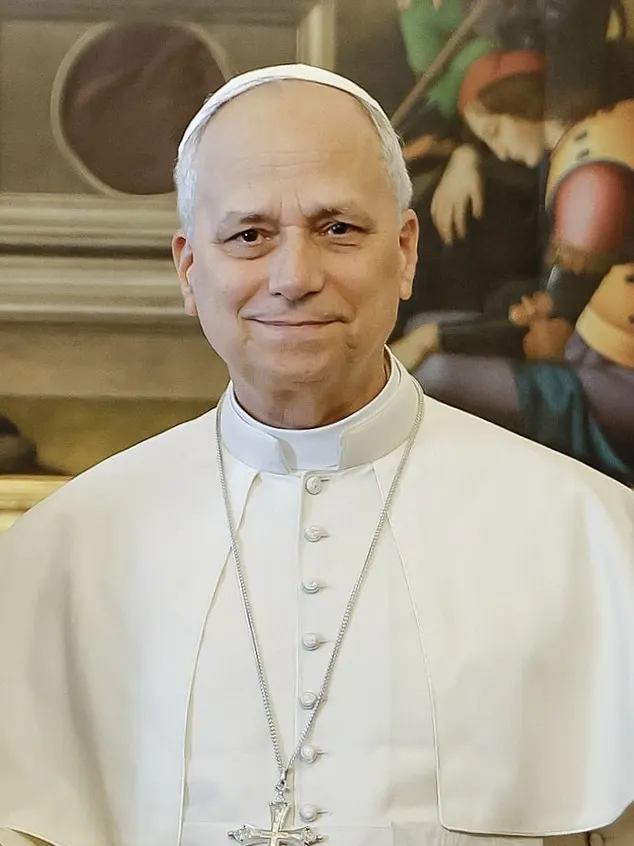

El papa León XIV congrega a una multitud en Buenos Aires y pide atender a los más vulnerables
Las autoridades estimaron hasta 1,5 millones de asistentes en la capital argentina; el pontífice también visitó un centro para personas con discapacidad.

Qué pasó
El papa León XIV celebró una misa al aire libre en Buenos Aires, Argentina, el lunes 9 de noviembre de 2026, ante una multitud estimada por las autoridades locales en hasta 1,5 millones de personas. Se trata de una estimación oficial, no de un recuento verificado de manera independiente. Según Reuters, fue la primera visita papal a Argentina desde 1987. El presidente Javier Milei asistió a la misa. Antes, León XIV visitó Cottolengo Don Orione, una institución que atiende a más de 400 personas con discapacidad, y destacó la dignidad humana y la atención a las personas vulnerables. Associated Press informó que el centro afronta dificultades financieras en medio de recortes del gasto público. El pontífice también habló de las dificultades de las familias, la incertidumbre económica y la violencia durante una gira que incluye Uruguay, Argentina y Perú.
Análisis del Cuervo
La visita combinó movilización religiosa y un mensaje social. La gran asistencia a la misa demuestra la capacidad de convocatoria de la Iglesia católica en la región, pero no permite deducir por sí sola un cambio duradero en la afiliación religiosa. La visita al centro asistencial puso el foco en las consecuencias de las decisiones presupuestarias para los servicios sociales y las personas con discapacidad. El mensaje del papa subraya la dimensión social de su agenda mientras Argentina debate la austeridad y la financiación de los cuidados.
Contrapunto
La cifra de hasta 1,5 millones de asistentes procede de las autoridades y no ha sido auditada de manera independiente. Los debates sobre recortes y financiación de cuidados incluyen decisiones presupuestarias controvertidas; la visita no determina por sí sola qué políticas serán más eficaces. La fotografía de archivo muestra a León XIV en el Vaticano en octubre de 2025, no la misa de Buenos Aires de noviembre de 2026.